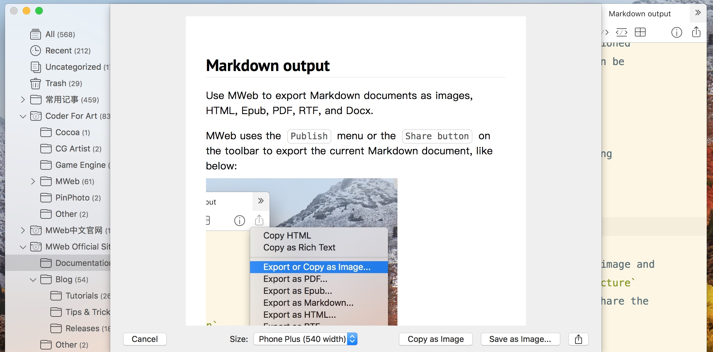
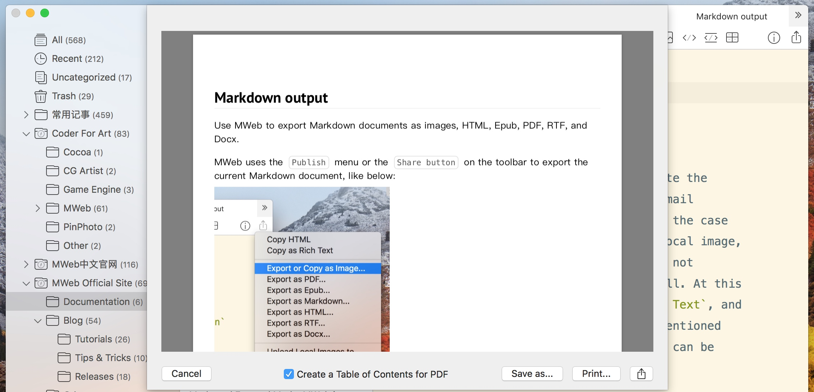
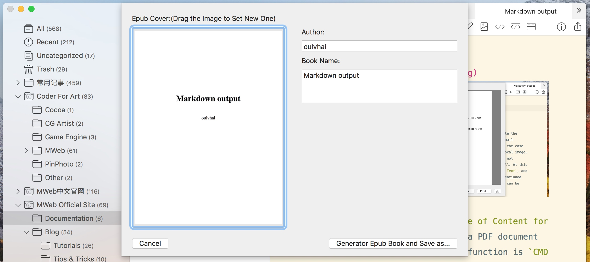

Use MWeb to export Markdown documents as images, HTML, Epub, PDF, RTF, and Docx.
MWeb uses the Publish menu or the Share button on the toolbar to export the current Markdown document, like below:

Copy as Rich Text feature
This function is mainly used to paste the current Markdown document into the mail (mail.app), Pages.app, Word.app. In the case where the Markdown document has a local image, exporting to the docx function does not currently support the image very well. At this time, you can use the Copy as Rich Text, and then press CMD + V in the above mentioned three software, so that the picture can be successfully pasted.
Export or copy as Image
After using this function, the following interface will pop up:

You can set the width of the exported image and press Copy as picture or Save as picture button, or use the Share button to share the image.
Export to PDF
After using this function, the following interface will pop up:

You can check the Create a Table of Content for PDF (TOC) checkbox to generate a PDF document with TOC. The shortcut for this function is CMD + P.
Export to Epub
After using this function, the following interface will pop up:

As shown in the image above, you can modify the cover of Epub.
Export to HTML, RTF, Docx, etc.
Exporting to HTML using MWeb will export a single HTML, and if there is a local image, the local image will be Base64 encoded into the HTML.
Also, exporting to Docx does not currently support local images.